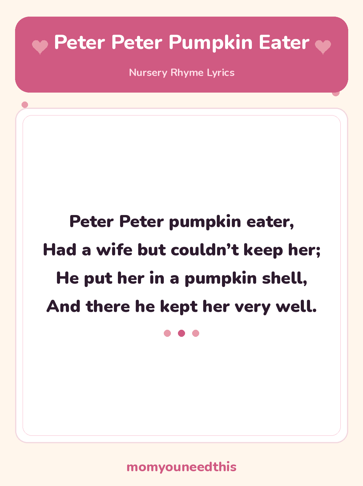

Peter Peter Pumpkin Eater The Silly Pumpkin-Shell Rhyme, With Lyrics and a Free Printable
Peter Peter Pumpkin Eater is a traditional nursery rhyme with a tongue-twister name and a very silly ending — a wife kept in a pumpkin shell. The full lyrics are below, with a free printable lyrics sheet to read, chant and giggle over together. No signup, just print and play.
Last updated: October 25, 2026
Quick Answer
Peter Peter Pumpkin Eater is a traditional nursery rhyme about a man who keeps his wife in a pumpkin shell — a silly, tongue-twister rhyme children love to chant. The full lyrics are on this page, and the same words are on the free printable lyrics sheet to print at home.
At a Glance
- Rhyme: Peter Peter Pumpkin Eater
- Type: Story rhyme with a tongue-twister name
- Best for: Ages 3–7
- Printable: 1 lyrics sheet
- Cost: Free — print at home
🎵 Peter Peter Pumpkin Eater Lyrics
The classic verse — the one most families know, printed in full.
Peter Peter pumpkin eater,
Had a wife but couldn’t keep her;
He put her in a pumpkin shell,
And there he kept her very well.

✂️ Download Your Free Peter Peter Pumpkin Eater Lyrics Sheet
The full Peter Peter Pumpkin Eater lyrics on one big, clear sheet — made for fridges and singing together.
⬇️ Download Free Lyrics Sheet 🖨️ Print🎁 Free printable for ages 3–7
🎃 About This Rhyme: The Pumpkin Shell Ending
Say the first line slowly, then try it fast: Peter Peter pumpkin eater is a tongue-twister in its own right, stacked with P sounds. Children love the race of it — getting all the way to “eater” without tripping is the whole game, and it is genuine sound play of the kind that builds early reading ears.
Then comes the ending everyone remembers. Peter puts his wife in a pumpkin shell — in rhyme-world, a big hollowed-out pumpkin makes a snug little house, and the last line insists he “kept her very well” there. There is no lesson hiding in it and no sad ending to explain: it is a nonsense picture, a house made of pumpkin, and the silliness is the point.
Because the picture is so strange, this rhyme is a good one for drawing afterwards — ask your child what a pumpkin house would need. A door? A chimney? Windows in the rind? The rhyme gives you the shell; children happily build the rest.
🖨️ How to Use This Rhyme
- Chant it together. Start slow and speed up a little with each round — the tongue-twister first line is funniest when it finally trips somebody up.
- Clap the P sounds. Clap on every P word in the first line — Peter, Peter, pumpkin — so children hear the sound pattern the rhyme is playing with.
- Print the lyrics sheet. One page, big clear type. Put it where your child can point to the words while you chant, line by line.
- Let them lead the chant. Once the rhythm clicks, let your child set the speed. Keeping a rhyme going at their own pace is early reading fluency in disguise.
🎵 More Nursery Rhymes & Fun
🎵 Nursery Rhymes
The full hub of classic nursery rhymes — lyrics and a free printable sheet for every rhyme. Browse all nursery rhymes.
🎶 Georgie Porgie
Pudding and pie and a teasing boy who runs away — the classic playground rhyme, with lyrics and a printable. Read Georgie Porgie.
🎶 Pat-a-Cake
The classic clapping rhyme for babies and toddlers, with the actions and a printable lyrics sheet. Read Pat-a-Cake.
📚 Learning Activities
The full hub of free printable activities for toddlers and preschoolers. Browse activities.
❓ Peter Peter Pumpkin Eater FAQ
What are the lyrics to Peter Peter Pumpkin Eater?
They are written out in full on this page above — “Peter Peter pumpkin eater, had a wife but couldn’t keep her…” The free printable lyrics sheet carries exactly the same words, so you can print it and chant along together.
What age is Peter Peter Pumpkin Eater for?
It suits preschoolers and early school children, roughly ages 3 to 7. Younger children enjoy the chant and the silly pumpkin picture; older ones take on the tongue-twister first line as a speed challenge.
Can I print the lyrics sheet?
Yes — the lyrics sheet is free to print at home, with no signup. It is a single page carrying the full rhyme in big, clear type, made for fridges, nursery walls and chanting together.
Why did Peter put his wife in a pumpkin shell?
Because this is a nonsense rhyme — in rhyme-world, a big hollow pumpkin makes a snug little house, and the rhyme says he kept her very well there. There is no lesson in it; the silly picture of a pumpkin house is what makes children laugh.